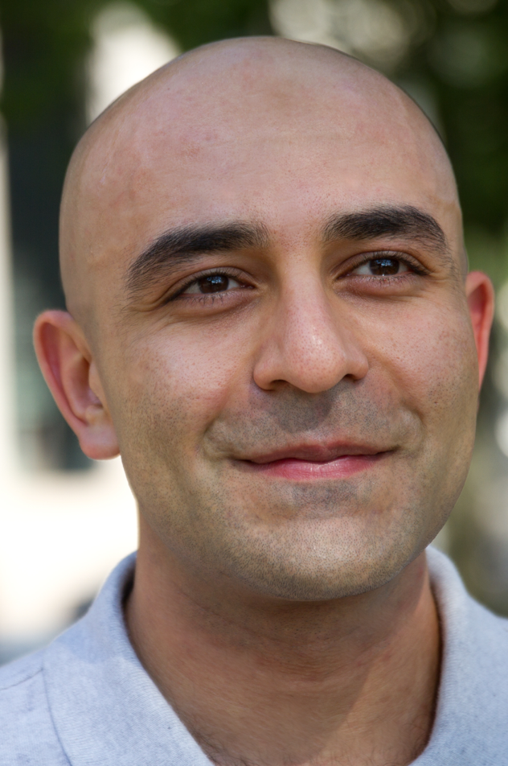

 I am an assistant professor of Industrial Engineering at the University of Pittsburgh. Before joining Pitt IE in the fall of 2020, I was a postdoc with joint appointments at MIT Institute for Data, Systems, and Society (IDSS) and MIT Sloan School of Management (co-advised by Elchanan Mossel and Dean Eckles). I did my PhD in Electrical and Systems Engineering at the University of Pennsylvania (advised by Ali Jadbabaie). Broadly speaking my works are at the intersection of networks, data, and decision sciences. I borrow tools from applied probability, statistics, algorithms, as well as decision and game theory. Some of my current focus is on the challenges of inference and intervention design in complex, large-scale sociotechnical systems, with applications ranging from online social networks, e-commerce and collective decision/action platforms to public health, modern civilian cyberinfrastructure and future battlefields. I am especially interested in the critical role that information plays in the operation of sociotechnical institutions and its societal implications, including on diversity, fairness and privacy. I have served on the program committee of the 2021 ACM Economics and Computation conference, the advisory council of the 2021 vaccine confidence fund (then a new industry alliance), as well as the program committees of EAAMO'22 (Equity and Access in Algorithms, Mechanisms, and Optimization), SocialSens2022 (Special Edition on Information Operation on Social Media) and the 2022 IISE annual meeting (as the operations research track co-chair). I am currently serving on the program committee of the 2023 ACM Economics and Computation conference. I have published in the Proceedings of the National Academy of Sciences, Nature Human Behaviour, Nature Communications, the Operations Research journal, Automatica journal, and several IEEE Transactions. At Pitt, I lead the Sociotechnical Systems Research Lab and teach Stochastic Processes (IE 2084), Statistics (IE 2007), Design of Experiments (IE 1072), as well as a new engineering elective called "Data for Social Good" (IE 1171) that is developed as part of the Pitt Year of Data and Society initiative. |
Education:
PhD in Electrical and Systems Engineering, University of Pennsylvania
Master's in Statistics, Wharton School, University of Pennsylvania
Master's in Systems Engineering, University of Pennsylvania
Master's in Electrical and Computer Engineering, Concordia University
Bachelor's in Electrical Engineering-Control, Sharif University of Technology
Research Interests:
Network science, Statistical analysis of networks
Distributed interventions, optimal network interventions
Statistical decision theory, estimation, and inference
Applied problems in social and economic networks, social platforms
Social learning and collective intelligence
Social and behavioral sciences, Judgment and decision making
Distributed dynamics, control, estimation, and learning
Awards and Honors:
Meta Foundational Integrity Research Award: Identifying Macro and Micro Factors in Spreading Conspiratorial Content (with Yu-Ru Lin)
Pitt Cyber Accelerator Teaming Grant: A Sampling and Modeling Framework to Counter Online Conspiratorial Propaganda (with Yu-Ru Lin, Balaji Palanisamy, and Michael Colaresi)
Pitt Cyber Accelerator Explorer Grant: Modeling Threats to Sustainability of Social Networks as Critical Infrastructure (with Jacob Otto)
Pitt Momentum Funds 2022 Award: Socially Responsible Data Collection and Network Intervention Designs
Pitt Year of Data and Society funded project: Complementing the Engineering Curriculum with Data for Social Good
Finalist in 2021 Facebook Statistics for Improving Insights, Models, and Decisions Proposal Competition
Most Inspiring Research Paper Award at the ACM Collective Intelligence Conference (2021)
ESE Graduate Award for Best Teaching Assistant at the Doctoral Level (2016)
ACC 2016 Best Student Paper Award Finalist
Outstanding Poster Award in 2016 Stochastic Networks Conference
Finalist in 2015 Facebook Fellowship Competition
Gold medal in Iran National Chemistry Olympiad (2004)